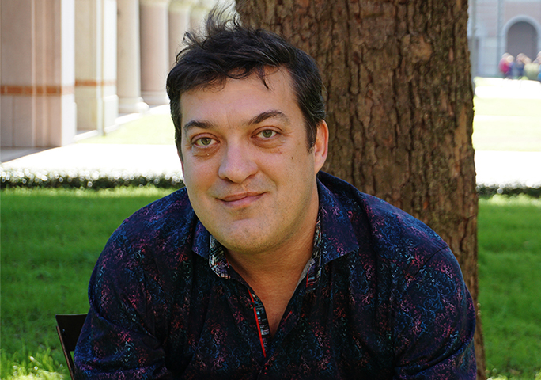
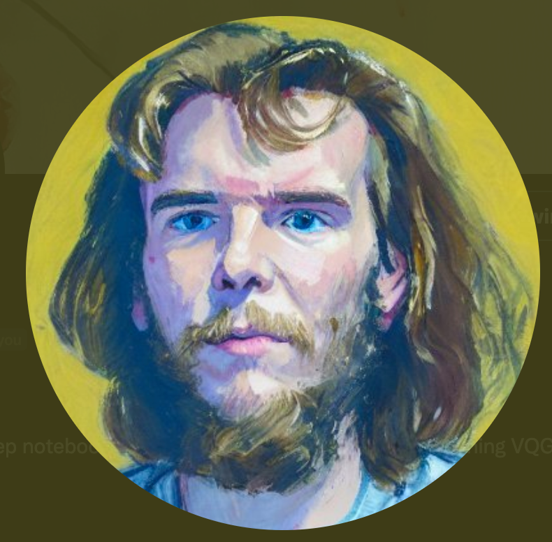

Ziv Epstein
Zivvy Epstein is a late stage PhD student at the MIT Medis Lab in the Human Dynamics group. His work integrates aspects of design and computational social science to model and understand cooperative systems. He focuses on new challenges and opportunities that emerge from a digital society, particularly in the domains of artificial intelligence and social media.
Simon Colton
Simon Colton is a professor of computational creativity, generative artist and app developer. He has academic appointments at Queen Mary University of London in the UK and at SensiLab of Monash University in Australia. He was previously an academic at Falmouth University, Goldsmiths College and Imperial College London. He is an AI researcher with 25 years of experience studying questions related to creativity in machines.
He has worked on generative mathematics, bioinformatics, graphic design, visual art, music, creative language and videogame design projects. He has led projects leading to large software installations challenging assumptions about creativity, including The Painting Fool automated artist, the HR generative mathematics system(s), the WhatIf Machine fictional ideation engine, the Wevva casual game creator and the Art Done Quick visual art casual creator.

Aaon Hertzman
Aaron Hertzmann is a Principal Scientist at Adobe and Affiliate Faculty at University of Washington. He received a BA in computer science and art history from Rice University in 1996, and a PhD in computer science from New York University in 2001. He was a Professor at University of Toronto for 10 years, and has also worked at Pixar Animation Studios and Microsoft Research. He has published over 100 papers in computer graphics, computer vision, machine learning, robotics, human-computer interaction, and art. He is an ACM Fellow and an IEEE Fellow.

Ryan Murdock
Authored the BigSleep notebook and originated the approach of combining VQGAN & CLIP.
Kate Compton
Dr Kate Compton (@galaxykate) is a long-time generative artist, inventor, programmer, and Assistant Professor of Instruction at Northwestern University. She wrote the first paper on procedural platform-game levels, generated the planets for the video game Spore, created the language Tracery which runs over 10000 community-made bots on Twitter, and invented an early phone-based AR system. Her mission is to design artificial intelligence to augment human creativity, and to create tools that bring AI into the hands of poets, artists, kids, and weirdos.
Anna Jordanous
Dr Anna Jordanous is a senior lecturer in the School of Computing at the University of Kent. She is a member of the Computational Intelligence and Data Science research groups. Her research areas include computational creativity and its evaluation, music informatics, digital humanities, knowledge modelling, Semantic Web, and natural language processing. Primarily she works with computational creativity - the modelling, simulation or replication of creative activities and behaviour using computational means - with a focus on the question of how to evaluate claims of computer software being creative. As well as writing creative software to improvise music, Dr Jordanous has contributed a highly-cited standardised procedure for evaluating creative systems. She also uses music information retrieval and natural language processing in her work.